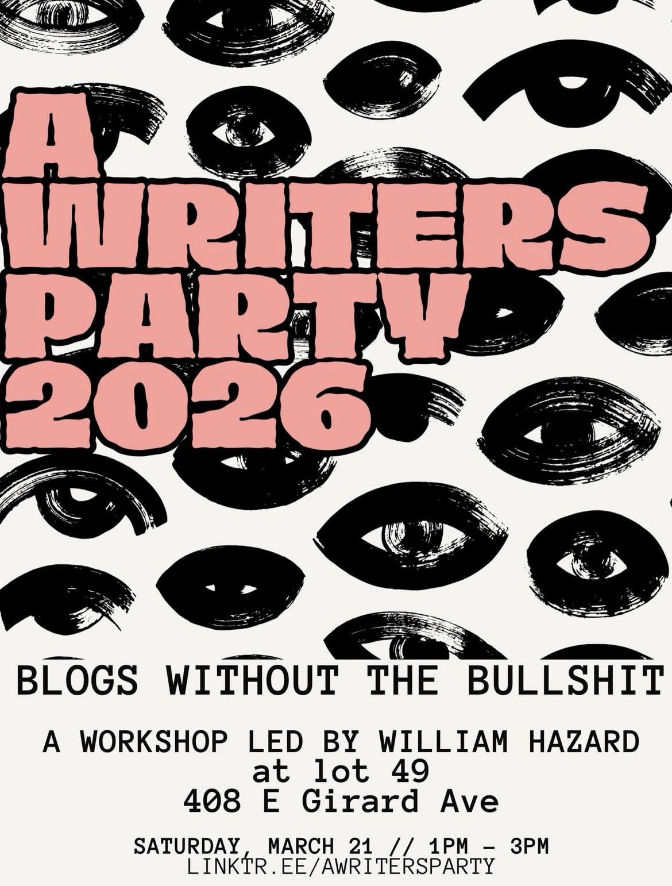

I'm very excited to be participating in two events for A Writer's Party here in Philadelphia this Saturday! The first, blogs without the bullshit, will be a workshop focused on getting folks started blogging with RSS using a simple HTML and CSS website written in markdown and converted and published with shell scripts and codeberg pages. The idea is to foster online community outside of big corporate platforms, using free and open source tools that are readily available. Over the last few years, several people have asked me how I make my website and blog – this workshop is basically that. The second event will be the very first issue release party for oscillations, a new web magazine from Philadelphia reading and performance series Ghost Harmonics. I was honored to be asked to serve as an expanded field poetics editor for this issue, and Mike and I have had a great time putting this issue together over the last month. I can't wait to share what we made with the incredible work we received.


williamthazard [at] pm.me